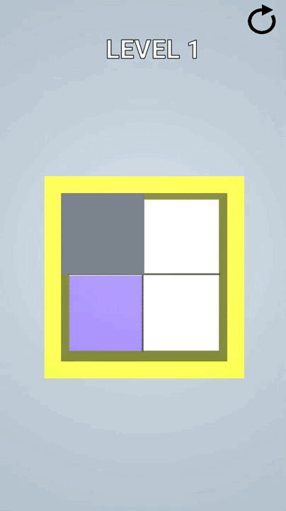

Project archive
Designed to be played.
A collection of mobile games, application prototypes, and foundational studies. Every case study focuses on the interaction, technical problem, and design decisions behind the build.
All work
Thirteen focused builds.
Filter the archive by project type, or open any card for a concise case study.

Push Stacks
Grow a stronger crowd by choosing the right multiplier gates.

DIY Cocktail
Mix ingredients, liquid effects, glitter, and decoration in a tactile mobile toy.

Shooting Balls
Aim for baskets and calculate the multiplier needed to clear each level.

Type It 3D
Turn mechanical keyboard input into movement through a short arcade course.

Fill In
Cover every tile without crossing a completed path.

Popping Balloons
Guide a needle through hazards and line up satisfying chains of pops.

Reach to Space
Manage fuel and solve quick arithmetic questions on a rocket journey.
Union App
A collaborative social application concept for discussions, events, and messages.
Emoji Puzzle
Decode familiar expressions using compact emoji clues and a letter bank.

Confess It
A full-stack social prototype with posts, profiles, messaging, and notifications.
Mr. Robot Chat Game
An early Android experiment in branching replies and conversational interaction.
Laser Defender
A classic shooter study covering waves, projectiles, scoring, and feedback.
Block Breaker
A focused brick-breaker exercise in physics, levels, sound, and game state.
More than screenshots
Three demos run in the browser.
The interactive lab preserves working WebGL tools for drawing, keyframe animation, and real-time shading.